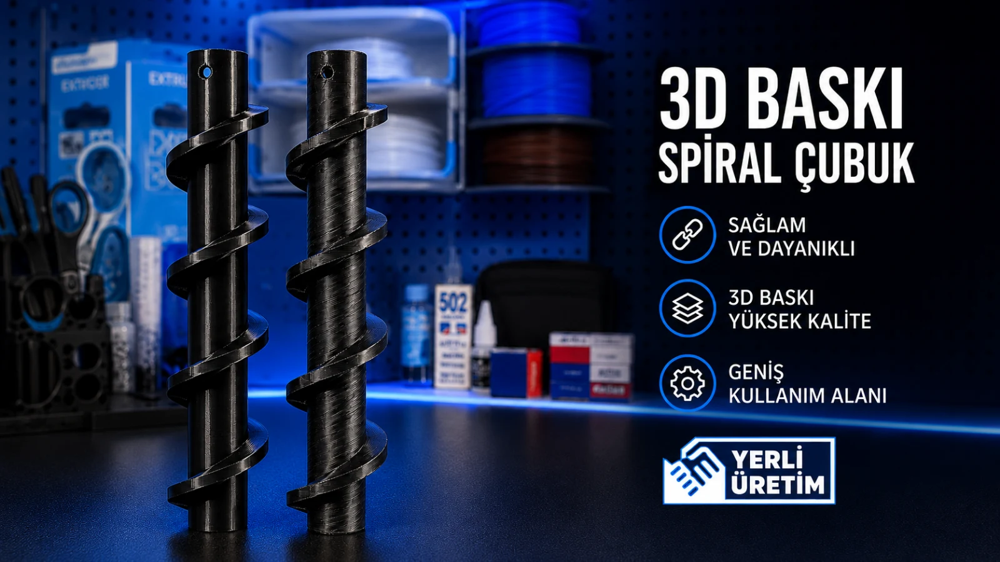

Prototip + Parça · Yedek parça / makine aksamı
Temini zor bir makine aksamını 3D üretimle yeniden oluşturduk.
Otel kullanımındaki çikolata şelalesi makinesi için spiral aksam, mevcut ölçüler ve çalışma ihtiyacına göre yeniden üretilerek fonksiyonel yedek parça çözümü hazırlandı.

Proje özeti
Otel kullanımındaki çikolata şelalesi makinesi için spiral aksam, mevcut ölçüler ve çalışma ihtiyacına göre yeniden üretilerek fonksiyonel yedek parça çözümü hazırlandı.
UYGULAMA KAPSAMI
DİĞER PROJELER
Sahadan başka işler.


BENZER BİR İHTİYAÇ MI VAR?